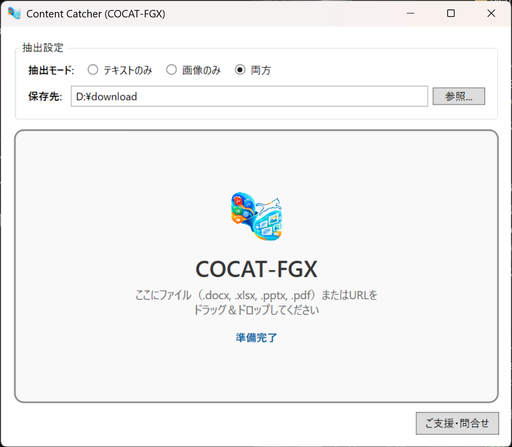
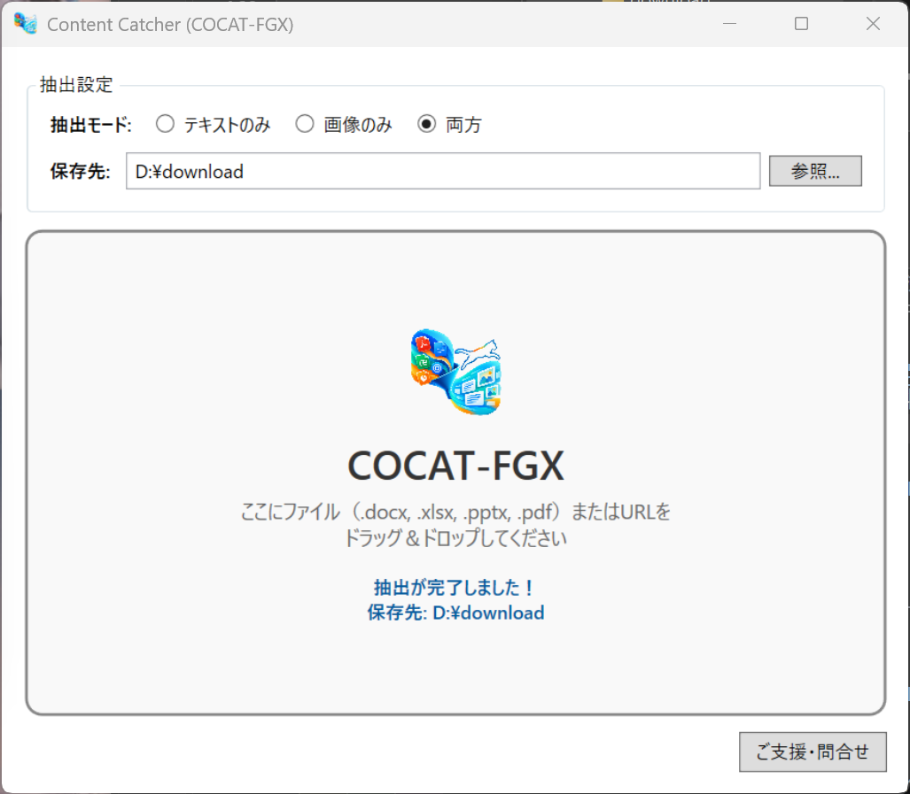
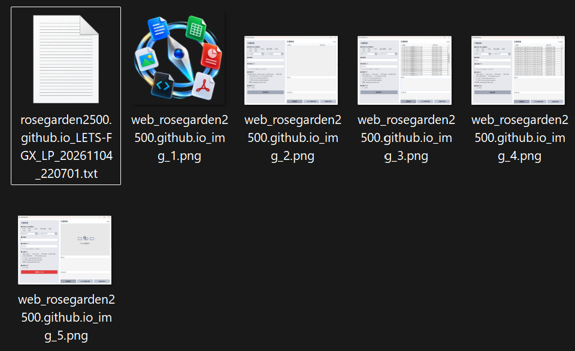

Word、Excel、PowerPoint、PDF、WebのURLをドラッグ＆ドロップするだけ。
欲しいテキストや埋め込み画像を瞬時に丸ごと一括抽出します。


複雑な設定は不要。直感的なインターフェースですぐに作業を始められます。

抽出されたテキストデータ（.txt）と高画質な埋め込み画像群は、指定した保存先に分かりやすく整理されて自動出力されます。資料作成やデータ移行の作業効率が劇的に向上します。
PDFやWord・Excelなどの各種オフィス文書はもちろん、指定したWebページの文章や画像も一元的に一括取得可能です。
内蔵のOCRにより、文字情報を持たない画像PDFやベクターPDFも高解像度レンダリングから自動で文字起こしします。
文書内に埋め込まれたオリジナル画像素材を画質劣化なしで抽出。用途に合わせてテキストのみ・画像のみの切り替えも自在です。
抽出時にWebサイトや文書に含まれる背景画像・小さなアイコンなどの不要なノイズ画像を自動判定して除外します。
元のファイル名やWebサイトの識別名を維持しつつ、タイムスタンプやページ番号を自動付与して上書き保存を防止します。
面倒なセットアップ作業は不要。ZIPファイルを解凍して実行ファイルをダブルクリックするだけで、すぐにお使いいただけます。
ダウンロードしたzipファイルを任意のフォルダに解凍するだけで、すぐにご利用いただけます（インストーラー不要のポータブル仕様です）。
解凍したフォルダ内にある実行ファイル `COCAT-FGX.exe` をダブルクリックして起動してください。あらかじめデスクトップなどにショートカットを作成しておくと、次回からよりすばやく起動できて便利です。
抽出モード（テキストのみ・画像のみ・両方）を選択する
対象ファイルを画面内にドラッグ＆ドロップ、またはURLを入力する
保存先を確認して自動出力結果を受け取る
本ソフトウェア（COCAT-FGX）はフリーウェアです。個人利用・商用利用を問わず、どなたでも無料でお使いいただけます。
本ソフトウェアの利用によって生じたいかなる損害・トラブルについても、作者は一切の責任を負いかねます。ご利用にあたっては、ご自身の責任において行ってください。